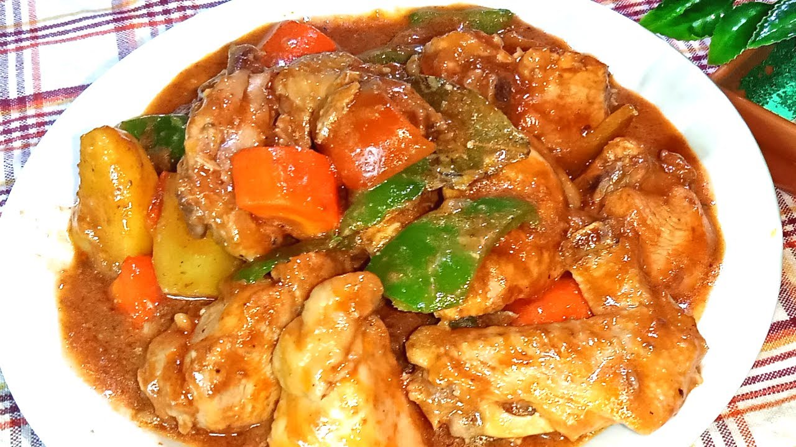

Kalderetang Manok Recipe
What is Kalderetang Manok?
Kalderetang Manok is a popular Filipino dish consisting of tender chicken cooked in a
flavourful sauce made from a blend
of tomato sauce, onions, garlic, and various spices. It is traditionally served over rice.
While traditionally Kaldereta
was prepared with goat or beef meat,
modern variations now include pork, fish, tofu and even chicken.
Ingredients
1 kg Chicken Legs
1/3 cup vinegar
salt to taste
1/2 tsp black peppercorns lightly cracked
1/2 Tbsp minced garlic
1 medium onion - chopped
Canola oil for frying
500 gm Tomato Sauce
1 85 gm can of Liver Spread
2 pcs medium sized Bell Pepper seeded and sliced
2 pcs long Green or Red chilli [optional]
1/3 cup bottled olives - drained [optional]
1 can of Green Peas you can also use fresh or frozen 1/2 cup
250 gm Potatoes - peeled and quartered
1/2 cup grated cheddar cheese
Hot Chilli Sauce [optional]
Instructions / How to Cook
1. In a bowl add the following ingredients vinegar, salt, garlic, and peppercorns, then mix thoroughly.
2. Add the chicken pieces to the mixture and mix well. Marinate chicken for at least 2 hours.
3. In a big pot, heat oil for frying. Fry the potatoes till cooked.
4. Now, Drain the Chicken from marinade and fry briefly in the oil in batches. Set aside.
5. Remove oil from the pot but leave about 2 Tbsp. Heat up again and saute the onion on medium heat until soft and translucent (about 4-5 minutes).
6. Scoop out the garlic and peppercorns from the marinade and add to the onion. Saute for a few minutes.
7. Add in the browned chicken, stir for a minute then add the rest of the marinade, stir and cook for about a minute.
8. Stir in the Tomato Sauce and bell pepper. Bring to boil then turn down the heat.
9. Add the fresh chilli, simmer until meat is almost done, Now add the Liver Spread and mix well to combine.
10. Add potatoes and peas. Simmer until potatoes are cooked.
11. Add grated cheese, mix well until cheese has melted.
12. Taste the Kaldereta sauce and add salt to correct seasonings, you can now add the Hot Chilli Sauce if preferred.
13. Serve warm with Rice.